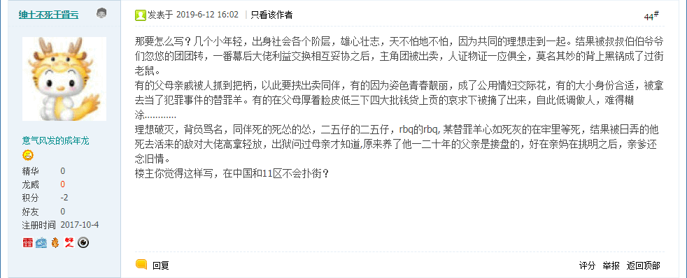

刚看完《新闻联播》，上网乱转在之江临安「原创文学论坛」发现了一条重要情报：《你们一直说的日系作品没格局》

日系主角团の真实
那要怎么写？几个小年轻，出身社会各个阶层，雄心壮志，天不怕地不怕，因为共同的理想走到一起。结果被叔叔伯伯爷爷们忽悠的团团转，一番幕后大佬利益交换相互妥协之后，主角团被出卖，人证物证一应俱全，莫名其妙的背上黑锅成了过街老鼠。
有的父母亲戚被人抓到把柄，以此要挟出卖同伴，有的因为姿色青春靓丽，成了公用情妇交际花，有的大小身份合适，被拿去当了犯罪事件的替罪羊。有的在父母厚着脸皮低三下四大批钱货上贡的哀求下被摘了出来，自此低调做人，难得糊涂…………
理想破灭，背负骂名，同伴死的死怂的怂，二五仔的二五仔，rbq的rbq, 某替罪羊心如死灰的在牢里等死，结果被日弄的他死去活来的敌对大佬高拿轻放，出狱问过母亲才知道,原来养了他一二十年的父亲是接盘的，好在亲妈在挑明之后，亲爹还念旧情。
楼主你觉得这样写，在中国和11区不会扑街？
我怀疑这是在爆料砥砺奋进六年半以来在国际化大都市「华语第一精日论坛」为主的宣传阵地当中炒作的钦定主角龙傲天及其伙伴开挂升级装哔打脸平砍连击带顺劈一命通关的传奇经历所对应的现实生活，但我没有证据。
那就从身边出发从小事出发，继续喋喋不休孤苦伶仃可怜废柴草根文盲矬胖老穷光棍汉那缩卵怂货窝囊废的表现吧，精神病仆街写手不入流码农数学渣一向思路广欢乐多疑神疑鬼，按色目宣传工作者讲话「心理脆弱到碰上棉花都会受伤」。
在《〈设定集〉注释〔５６〕》当中说过了，从2008年初开始戒烟，七年多之后的2015年中为了「政治和意识形态斗争」重新开始抽烟，但是在那时候还不是公开理由的好时机。
现在可以明说了，就是在2015年中，一票色目宣传工作者开始追着我嘲笑，其中就包括了将我于囧斋孤单在宅凄凉上线的日常解读为「蹲班房」，与此同时就有武德充沛钦定主角龙傲天把党国狼牙棒渗透得如同筛子一般，情报工学神童大少爷鼠标战神操纵全国电子投票，相关炫耀还伴随着以钦定死机「展现力量」。
我对此的解读已经在《忠诚勇敢杀伐果断通权达变学以致用的条子》展开过了。
不惮以最大的恶意揣测，当时很可能又有个「回民支队」出身的红皮绿色基因快挂了，正在国际一流和谐宜居之都731医院当中续命。估计在市内「回民社区」或旁边的「大厂回族自治县」找到了配型，然后准备依法治国偷梁换柱，将那马虏大捉走提供清真零件，再把体貌特征类似的「傻哔绿人」俺様塞进「班房」替代身份顶罪，就说缩卵怂货窝囊废备受打击抑郁症发作自绝于「J
闪米特太君」领导的「大汉帝国」了，于是户部档案上俺様就不存在了也。
这就是抽烟喝酒啥都吃的理由，还在之江临安「原创文学论坛」号召人民群众在险恶环境下尽量保持「亚健康」状态，至少在体检之前留个心眼，并且以身作则。
就刚才《北京新闻》，重点除了扫黑除恶就是医疗资源，这种事要一分为二的看待。扫黑除恶肯定是好事，改善医疗条件肯定也是好事，但是幕后黑手久经考验的积累几千年阴谋诡计之集大成者掺和进去了之后，好事就变成坏事了也。
如果要睁眼看世界，还可以与沙特换太子相关操作结合起来。很可能沙特国王九十多了撑不住了，准备找清真零件续命把儿子扶上马送一程；还有可能是七十多的弟弟撑不住了准备续命熬死国王接班，继续坚持兄终弟及的祖训。总之，在沙特国内和旁边叙利亚难民营都没有全民体检，难以及时筛查到配型。
所以，我中华兲朝上国全面开展体检工作，收集了充沛的大数据存放在「云上夜郎国」等地，于是沙特龙裔直接查询找到了马虏大候选，就开始运作「人脉」指挥党国狼牙棒「忠诚勇敢杀伐果断通权达变学以致用」了也。境内豪门贵种走兽派在其它国家和地区的关系户以此类推。
正因为俺様孤苦伶仃的砥砺奋进了六年半啥也没干，其它需要与「上进心」「闯劲」挂钩的栽赃陷害不那么容易，也就是「狸猫换太子」类型的顶罪还沾点边。所以按照「不惮以最大的恶意揣测」「预则立不预则废」「未算胜先算败」之类职业习惯，缩卵怂货窝囊废才能苟延残喘到现在仍然坚持不忘初心牢记使命随时更新《设定集》嘛。
那么顺便就设定多说几句，上面这些思路广欢乐多，已经在《〈设定集〉注释〔５４〕》当中泛泛而谈展开过了。这里继续就具体细节深化构思，也是被最近娱乐新闻激发的脑洞。
最近有《博得之门Ⅲ》的预告，立刻我就想起了一个唤作博得之门的奇幻写手，其断更很久的大作《阴魂》当中有一段情节，说正义教会的领导人在砥砺奋进的节骨眼上积劳成疾眼瞅着就快挂了，怎么续命都不行，于是决定用圣器为命匣转变为巫妖，还是骷髅眼眶里飘红火的邪恶巫妖，于是主角莫名惊诧。
众所周知，本位面地球上有个唤作「雅威见证会」的宗教组织，教义就是禁止输血，遑论器官移植。架空中就可以把这段情节照搬到卡壳世界当中，说有个类似的秘密组织也是打着伟大光荣正确的旗号，但是核心在革命事业的关键时刻也快挂了，于是「不得不」违背教义运用了「医疗界」最先进的科技，以及「牺牲品」。
再顺便，博得之门的《阴魂谷》由于有悖于社会主义精神文明建设的原因已经很久没更新了，估计很多新读者不知道，而老读者也差不多都忘了，于是据称已经被人缘好情商高的色目帮闲「狩猎」，成为鸡巴尊贵色目钦定文豪「复制并成功」的战利品。
这种时候，特意提起「出处」，就是以身作则示范咱这「言必信行必果硁硁然」的小人那身正道直俯仰无愧天地的高风亮节。之前多少次都一样，但凡记得住出处的，都会在正文或注释当中提到。对于一些属于公众领域的客观事实，尽量给出引用来源。
问题在于，我中华兲朝上国自有国情在此，伟大光荣正确的搜索引擎能找到的东西就是那些，很多都是被洗稿工作室反复修改到原作者本人都看不出来的程度。
所以，实在找不到原始出处，只能避而不谈，再提醒内容属于公众领域，可以参考相关专业著作，就是不想给各种「复制并成功」的公众号百家号洗稿工作室打广告。